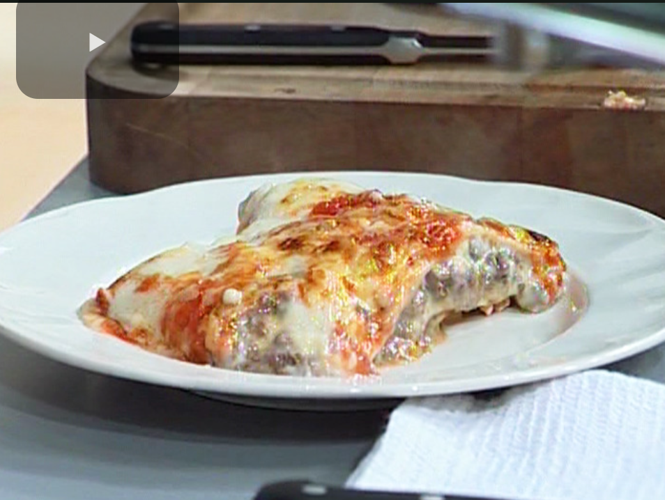

Lasagna

Recipe for Lasagna
Learn how to prepare this Lasagna recipe, by el Gourmet
Ingredients
- Onion 1
- Butter 100g
- Milk 1.5L
- Flour 100g
- Dry pasta for lasagna 500g
- Mozzarella in slice 300g
- Chopped veal 1k
- Garlic 1 clove
- Spinach 200g
- Tomato sauce 400cc
- Grated parmesan chesse 200g
- Cooked ham 30 fetas
- White wine 1 glass
- Nutmeg 1 tablespoon
Preparation
- Heat the milk with the flour in a pot. Mix well until it dissolves.
- Add the butter, salt, white pepper and grated nutmeg.
- Stir constantly until thickened.
- Chop the onion, grate the garlic clove. Sweat in a saucepan with olive oil.
- Add the minced meat, seal until cooked.
- Deglaze with white wine.
- Arrange a layer of tomato sauce on the bottom of the mold.
- Intersperse layers of pasta, meat, tomato sauce, bechamel sauce, spinach, ham and mozarella.
- Finish with a layer of bechamel sauce, with lots of grated Parmesan cheese.
- Bake at 180° for 10 minutes to gratin and finish cooking.